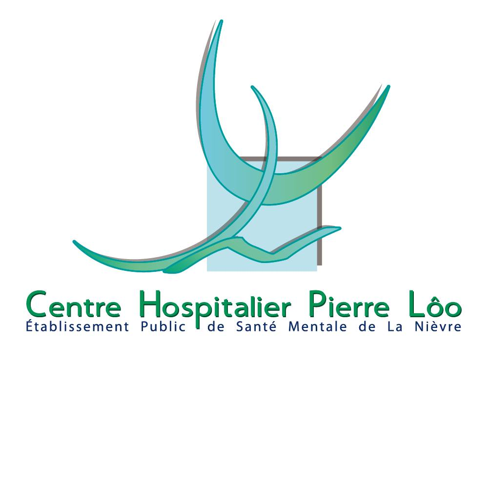

Stage - Centre Hospitalier Pierre Lôo
Contexte
Le Centre Hospitalier Pierre Lôo, situé à La Charité-sur-Loire (Nièvre), est un établissement public de santé mentale (EPSM) dédié à la prise en charge des adultes en psychiatrie. Il fait partie du Groupement Hospitalier de Territoire (GHT) de la Nièvre, une structure collaborative regroupant plusieurs établissements de santé du département pour optimiser l'organisation des soins et des ressources.
Rôle principal de la cellule informatique du CH de La Charité
-
Gestion des systèmes d’information :
- Assurer le fonctionnement quotidien des infrastructures informatiques (serveurs, réseaux, postes de travail, applications).
- Garantir la disponibilité, la sécurité et la confidentialité des données médicales et administratives.
- Superviser les réseaux internes, l’accès aux bases de données, et la connectivité entre les différents services et sites du GHT Nièvre.
-
Support et assistance aux utilisateurs :
- Aider le personnel médical et administratif en cas de problèmes techniques.
- Former les utilisateurs aux outils informatiques hospitaliers (dossier patient informatisé, logiciels métiers, messagerie sécurisée…).
- Prendre en charge les demandes d’assistance et assurer un service de dépannage.
-
Développement et déploiement d’applications :
- Participer à la mise en place et à l’évolution des logiciels utilisés au CH (gestion des patients, facturation, plannings, etc.).
- Adapter ou développer des outils spécifiques pour répondre aux besoins des services hospitaliers.
-
Sécurité informatique :
- Mettre en œuvre les règles de sécurité informatique et de protection des données de santé (conformité RGPD, respect des normes HDS — Hébergement de Données de Santé).
- Gérer les droits d’accès des utilisateurs aux systèmes.
- Assurer la sauvegarde régulière des données.
Réalisation
- Participation à la création de modules de gestion des évènements pour l'intranet du Centre Hospitalier Pierre Lôo.
- Développement de modules avec le framework Angular.
- Respect du cahier des charges et des normes imposées par le GHT.
- Livraison de documentations techniques et accompagnement des utilisateurs.
Compétences mobilisées
- - Exploiter des référentiels, normes et standards adoptés par le prestataire informatique (utilisation des outils imposés par le GHT).
- - Traitement des demandes concernant les applications (cahier des charges précis).
- - Participer à l’évolution d’un site Web exploitant les données de l’organisation (modules évenementiels du CH).
- - Planifier les activités (répartition des tâches au fur et à mesure du stage).
- - Accompagner les utilisateurs dans la mise en place d’un service (remise de documentations et explication du code fourni).